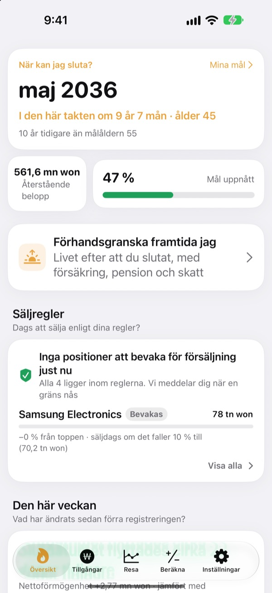
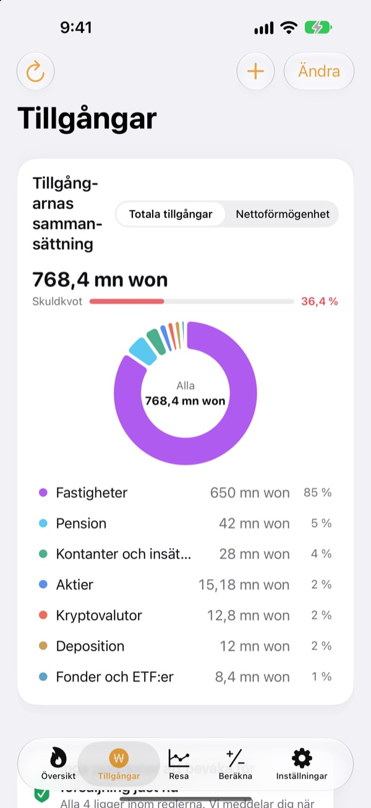
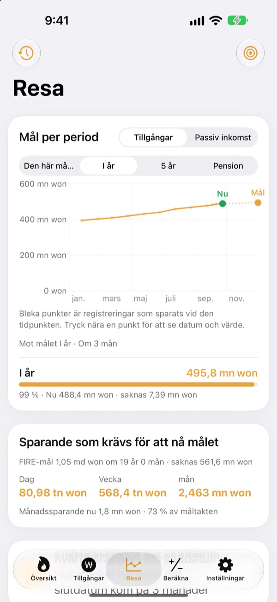
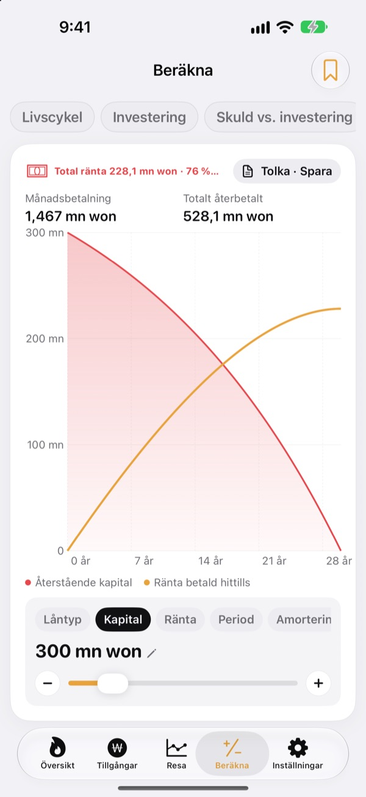

När kan du sluta?
Se det i siffror.
Ange vad du gör av med och vad du har sparat, så får du månaden du kan gå. Varje gång dina tillgångar ändras ser du om datumet flyttats närmare eller längre bort.
Inget konto behövs. Dina registreringar stannar på enheten.

Räkna ut ditt slutdatum
Dra i reglagen. Det är samma uträkning som appen gör på första skärmen.
Räknar du fortfarande i huvudet på om du kan sluta?
När bankkonto, ISK, pension och deposition ligger på olika ställen blir till och med totalen luddig, och slutdatumet förblir en gissning. Toesagak samlar allt på en skärm och räknar hela tiden om vilken månad du kan sluta.
Alla tillgångar på en skärm
Fastigheter, aktier, fonder och ETF:er, pensioner, kontanter och insättningar, depositioner, krypto och lån, sorterade efter typ med totala tillgångar, nettoförmögenhet och skuldkvot.
Kurser på aktier och krypto hämtas så att värdena hålls aktuella, och en skärmbild från din mäklarapp läser in innehav och värden i ett svep.

Hur mycket per dag som krävs
Se den här månaden, det här året, fem år och pension som mål, tillsammans med tidigare registreringar, i ett och samma diagram. Du ser också hur mycket du behöver spara per dag, vecka eller månad för att hålla kursen.
När dina tillgångar ändras sparas veckans registrering automatiskt, så historiken byggs upp av sig själv.

Räkna på det före stora beslut
Räknare för förmögenhetsutveckling genom livet, investering, amortera eller investera, lån, sparande och insättningar, lönens köpkraft och pengar omräknade till timmar. Dra i ett värde så ritas diagrammet om, och föregående kurva ligger kvar streckad för jämförelse.
Namnge och spara de upplägg du återkommer till.

Kom igång i tre steg
- 1
Ange utgifter och ålder
Ungefärliga siffror räcker. Slutdatumet syns direkt.
- 2
Lägg till dina tillgångar
Ju mer du delar upp dem, desto skarpare blir datumet.
- 3
Titta in då och då
Veckovisa registreringar byggs upp av sig själva, och appen kan påminna dig den 1:a varje månad.
Så räknar appen
- Mål
- Ett års utgifter efter att du slutat ÷ säker uttagstakt (vid 4 % motsvarar det 25 års utgifter)
- Slutdatum
- Månaden då din nettoförmögenhet plus det du sparar varje månad, med förväntad avkastning, når målet
- Totala tillgångar
- Allt du äger, sammanlagt
- Nettoförmögenhet
- Totala tillgångar minus skulder, till exempel lån
- Framsteg
- Nettoförmögenhet ÷ mål. Du kan också följa det utifrån passiv inkomst
- Det här kan du ändra
- Månadsutgifter, uttagstakt 2 till 6 %, förväntad avkastning 0 till 12 %, åldern du vill sluta vid
Alla resultat är vägledande beräkningar baserade på det du anger och är inte investeringsrådgivning.
Frågor
Var lagras mina registreringar?
Bara på din enhet. Det finns ingen registrering och inget skickas till utvecklaren. Slå på iCloud-synkronisering i Inställningar för att se samma registreringar på iPhone och iPad via ditt eget iCloud-konto.
Kurserna uppdateras inte.
Amerikanska och koreanska aktier, krypto och valutakurser fungerar utan inställningar. Kontrollera internetanslutningen och att tickern eller koden stämmer. Bostadspriser använder Koreas offentliga fastighetsdata och kräver en gratis tjänstenyckel som anges i Inställningar.
Vad är skillnaden mellan totala tillgångar och nettoförmögenhet?
Totala tillgångar är allt du äger, sammanlagt. Nettoförmögenhet är samma summa minus skulder, till exempel lån. Slutdatumet räknas på nettoförmögenheten.
Hur flyttar jag mina registreringar till en ny enhet?
Använd Exportera i Inställningar för att skapa en säkerhetskopia, spara den i Filer, iCloud Drive eller e-post och återställ den på den nya enheten. Säkerhetskopior innehåller aldrig API-nycklar. Appen sparar också automatiskt de 20 senaste säkerhetskopiorna på enheten.
Hur fungerar säljlarm?
För varje innehav anger du hur mycket det får falla från toppen, eller en målkurs. När gränsen passeras får du en signal. När kursen stiger håller appen tyst. Kurserna kontrolleras när du öppnar appen och när iOS tillåter det i bakgrunden (oftast med några timmars mellanrum), så det är ingen bevakning i realtid.
Kan jag hålla mina siffror privata?
Slå på Applås i Inställningar för att öppna appen med Face ID eller lösenkod. När låset är på visar inte heller den månatliga påminnelsen några siffror.
Kan jag titta runt först?
Slå på Demodata i Inställningar för att utforska alla skärmar med en fiktiv persons tillgångar. Slå av det, så är dina egna registreringar tillbaka direkt. Demodata går inte att använda medan iCloud-synkronisering är på.
Hur raderar jag alla mina data?
Raderar du appen försvinner alla registreringar som är sparade på enheten. Vill du behålla en kopia exporterar du först en säkerhetskopia i Inställningar.
Kan jag investera utifrån de här siffrorna?
Resultaten i Toesagak är vägledande beräkningar baserade på det du anger och en antagen avkastning. De är inte investeringsrådgivning, och det faktiska utfallet beror på marknaden och din situation.
Buggar, idéer eller frågor? Skriv till leeo@kakao.com.